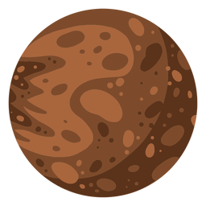

Planets

Mercury
Along with Venus, Earth, and Mars, Mercury is one of the rocky planets. It has a solid surface that is covered with craters like our Moon. It has a thin atmosphere, and it doesn’t have any moons. Mercury likes to keep things simple. Mercury spins slowly compared to Earth, so one day lasts a long time.Venus
Venus Venus is the second planet from the Sun. It is a rocky planet with a mass and size narrowly second in the Solar System to Earth, and with an atmosphere, which is the thickest of all four rocky planets of the Solar System and substantially thicker than Earth's.
Earth
Earth is the third planet from the Sun and the only place known in the universe where life has originated and found habitability. While Earth may not contain the largest volumes of water in the Solar System, only Earth sustains liquid surface water, extending over 70.8% of the Earth with its ocean, making Earth an ocean world.Mars
Mars is the fourth planet from the Sun and the third largest and massive terrestrial object in the Solar System. Mars has a thin atmosphere and a crust primarily composed of elements similar to Earth's crust, as well as a core made of iron and nickel. Mars has surface features such as impact craters, valleys, dunes, and polar ice caps.Jupiter
Jupiter is the fifth planet from the Sun and the largest in the Solar System. It is a gas giant with a mass more than two and a half times that of all the other planets in the Solar System combined, and slightly less than one one-thousandth the mass of the Sun.Saturn
Saturn is a gas giant composed predominantly of hydrogen and helium. It lacks a definite surface, though it is likely to have a solid core. Saturn's rotation causes it to have the shape of an oblate spheroid; that is, it is flattened at the poles and bulges at its equator
Uranus
Uranus is the seventh planet from the Sun and is a gaseous cyan ice giant. Most of Uranus is made out of water, ammonia, and methane in a supercritical phase of matter, which in astronomy is called 'ice' or volatiles.
Neptune
Neptune, like Uranus, is an ice giant. It’s similar to a gas giant. It is made of a thick soup of water, ammonia, and methane flowing over a solid core about the size of Earth. Neptune has a thick, windy atmosphere. One day on Neptune goes by in 16 hours.